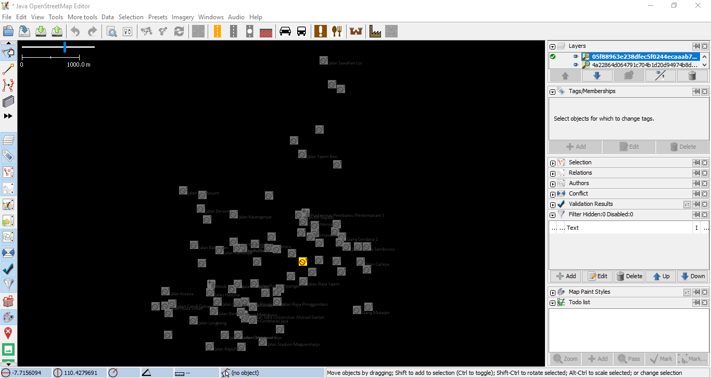
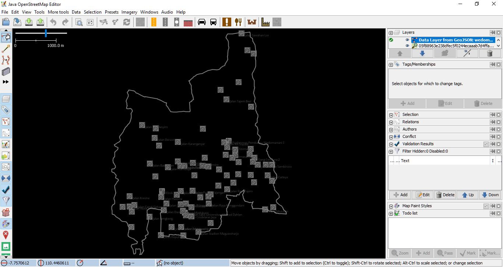
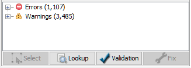
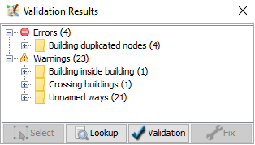
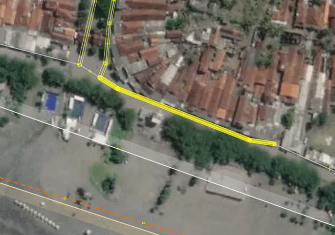
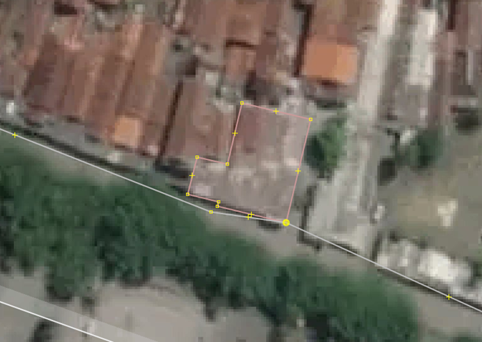

Penggunaan JOSM untuk Validasi Data Survei
Tujuan Pembelajaran:
- Menerapkan cara pengecekkan awal data hasil survei lapangan di JOSM
- Menerapkan cara penjaminan kualitas data hasil survei dengan JOSM
- Memahami jenis-jenis kesalahan dan peringatan yang harus diperbaiki di JOSM
JOSM merupakan software yang paling sering digunakan untuk melakukan pemetaan dan menambahkan data OpenStreetMap. JOSM lebih banyak digunakan karena dapat digunakan secara offline dan memiliki banyak fitur pendukung untuk memudahkan dalam melakukan pemetaan. Salah satu fitur unggulan yang dimiliki oleh JOSM adalah melakukan validasi data. Validasi data merupakan hal yang penting dilakukan untuk menjaga kualitas data OpenStreetMap.
I. Tahapan yang Dibutuhkan untuk Memeriksa Raw Data Hasil Survei
Dalam survei lapangan, data entry mengumpulkan dua jenis data yaitu data objek infrastruktur dan data batas administrasi. Sebelum dimasukkan ke dalam JOSM, kedua jenis data tersebut harus diperiksa oleh tim Quality Assurance. Hal ini dilakukan untuk memeriksa kelengkapan atribut yang dikumpulkan yang telah disesuaikan dengan Pembuatan Model Data OSM dan objek-objek yang berada didalam suatu area survei apakah sudah semua di ambil datanya.
-
Memeriksa Hasil Survei menggunakan Batas Administrasi
Hasil survei yang telah dikumpulkan harus dicek menggunakan batas administrasi yang ada. Tujuannya untuk melihat apakah seluruh objek yang ada dalam batas administrasi tersebut telah selesai disurvei atau belum. Anda dapat menggunakan batas administrasi yang diperoleh dari BPS atau dengan menggunakan batas administrasi yang telah digambar oleh Quality Assurance.
-
Silakan Anda buka hasil survei yang telah dikumpulkan. Sebagai contoh, dalam modul ini akan digunakan data hasil survei di daerah Yogyakarta.

-
Setelah itu, silakan Anda buka file batas administrasi yang Anda miliki. Dalam contoh ini akan digunakan data batas desa yang didapatkan dari BPS. Data dari BPS masih dalam format .shp. Untuk dapat dibuka di dalam JOSM, Anda perlu mengubah format data ini menjadi bentuk GeoJSON. Anda dapat membuka materi Menggunakan GeoJSON untuk mempelajari bagaimana cara mengubah format data ini.
Untuk membuka file batas administrasi, silakan pilih menu File → Open, kemudian masukkan batas administrasi yang Anda miliki.

-
Anda dapat membandingkan antara sebaran titik yang telah dikumpulkan dengan batas administrasi. Jika menurut Anda titik-titik yang dikumpulkan masih belum memenuhi target pemetaan yang diberikan atau masih ada objek-objek yang belum disurvei, Anda dapat meminta Data Entry untuk melakukan survei ulang untuk memenuhi target yang diinginkan.
-
-
Memeriksa Hasil Survei Batas Administrasi
Data entry menggunakan peta survei untuk menggambarkan batas administrasi yang didapatkan dari hasil diskusi dengan pihak kelurahan. Anda dapat melakukan pengecekan jumlah RW yang dihasilkan dalam kelurahan tersebut dan batas-batas di dalam peta apakah sudah jelas atau belum.
-
Menggabungkan hasil survei menjadi satu layer
Anda harus menggabungkan file hasil survei ODK Collect menjadi satu file yang sama. Untuk menggabungkannya, langkah-langkah yang harus Anda lakukan adalah:
- Silakan Anda cari file ODK Collect yang telah Anda pindahkan dari smartphone ke laptop/komputer Anda dengan menggunakan Windows Explorer. Jika Anda lupa bagaimana cara memindahkan data ODK Collect dari smartphone ke laptop/komputer Anda, silakan baca kembali modul Menggunakan Aplikasi ODK Collect. Sebagai contoh, dalam modul kali ini akan digunakan data hasil survei yang dilakukan di daerah Yogyakarta.
 <p align="center"><i>Data ODK Collect yang sudah dipindahkan ke laptop/komputer</i></p>- Setelah itu, pada kolom pencarian di sebelah kanan atas, silakan Anda ketik ‘.osm’. Hal ini bertujuan untuk mencari seluruh data hasil survei dengan format .osm.
 <p align="center"><i>Pencarian data dengan format .osm</i></p>- Jika sudah, silakan Anda pilih semua data tersebut dengan cara klik pada salah satu file dan tekan tombol Ctrl+A untuk memilih seluruh file tersebut.
 <p align="center"><i>Seluruh file sudah terpilih</i></p>- Selanjutnya, silakan Anda klik dan tahan pada salah satu file, kemudian Anda geser seluruh file tersebut dan masukkan ke dalam JOSM. Pastikan Anda sudah membuka software JOSM terlebih dahulu.
 <p align="center"><i>Geser dan buka file .osm ke dalam JOSM</i></p>- Jika sudah berhasil terbuka akan muncul tampilan seperti berikut
 <p align="center"><i>Seluruh file .osm yang berhasil dibuka dalam JOSM</i></p>- Jika Anda lihat pada data yang telah dimasukkan, masing-masing titik hasil survei masih berada dalam satu layer yang berbeda. Untuk itu Anda perlu menggabungkan seluruh data tersebut menjadi satu layer baru. Untuk menggabungkannya, silakan Anda klik salah satu layer data pada layer window kemudian tekan tombol Ctrl + A untuk memilih seluruh titik, kemudian klik kanan dan pilih Merge.
 <p align="center"><i>Menggabungkan seluruh layer</i></p>- Anda akan diminta untuk memilih layer tujuan atau target layer. Anda tidak perlu mengubah target layer ini dan langsung pilih Merge.
 <p align="center"><i>Pilih merge untuk menggabungkan seluruh data</i></p>- Data yang sudah berhasil digabungkan akan menjadi hanya satu layer.
 <p align="center"><i>Seluruh data yang sudah digabungkan</i></p>- Silakan Anda simpan layer yang telah disatukan dengan cara klik kanan pada layer tersebut, kemudian pilih Save as. Simpan layer ini sesuai dengan nama yang Anda inginkan.
 -
Upload Hasil Data Survei ke Google Drive
Setelah Anda gabungkan seluruh titik yang telah dikumpulkan, Anda perlu meng-upload data tersebut ke dalam media penyimpanan yang dapat diakses secara bersama-sama, baik Data Entry maupun Quality Assurance secara online. Anda dapat menggunakan media penyimpanan online gratis seperti Google Drive. Silakan Anda upload sesuai dengan folder yang telah ditentukan.

II. Mengecek Hasil Input Data Survei
Setelah Anda melakukan pengecekan data mentah atau raw data yang telah dikumpulkan, Anda perlu melakukan pengecekan terhadap data yang telah berhasil di-upload ke dalam server OpenStreetMap. Pengecekan ini dilakukan dengan menggunakan bantuan plugin to do list dan alat validasi (validation tool) yang telah tersedia di software JOSM.
-
Menggunakan Plugin To do list
Anda dapat menggunakan plugin pada JOSM yang bernama To do list untuk melakukan pengecekan data hasil survei. To do list memungkinkan Anda untuk membuat daftar objek-objek apa saja yang telah dikumpulkan. Dengan adanya daftar ini akan memudahkan Anda untuk melakukan pengecekan data sehingga tidak akan ada data yang terlewat. Anda dapat melihat kembali materi Menggunakan to-do list di JOSM untuk memahami lebih lanjut.
Sebagai contoh, Anda mempunyai data hasil survei sebagai berikut:

Data tersebut dikumpulkan menggunakan ODK Collect dan Open Map Kit (OMK). Data ini harus dilakukan pengecekan apakah data tersebut telah dikumpulkan dengan benar. Terlebih dahulu Anda harus men-download data OSM yang sudah ada untuk mengecek apakah objek yang disurvei sudah dipetakan atau belum. Setelah itu, Anda dapat mengecek data yang telah disurvei, Beberapa pengecekan yang dapat dilakukan antara lain memeriksa adanya kesalahan pengetikan dan peletakan titik. Mengingat banyaknya data yang harus dicek, akan lebih mudah jika Anda menggunakan to do list.
Sebagai contoh, Anda mempunyai data titik survei yaitu kantor kesehatan pelabuhan di daerah Jakarta Utara. Untuk itu, Anda perlu men-download data OSM untuk memeriksa apakah ada kesalahan dalam melakukan input data. Anda dapat melakukan perbandingan mengenai informasi atau atribut yang telah ditambahkan, apakah masih terdapat kesalahan pengetikan atau informasi yang tidak sesuai. Pada contoh, dapat terlihat bahwa pada atribut data mentah atau raw data memiliki penulisan nama objek dengan huruf kecil, namun jika dibandingkan dengan data hasil input, nama yang diketik sudah menggunakan huruf kapital pada awal kata. Hal ini menandakan bahwa data entry sudah memasukan data dengan benar.

Selain itu, Anda juga dapat memeriksa apakah titik objek tersebut telah diletakkan sesuai dengan titik yang sebenarnya. Pada gambar terlihat bahwa data mentah (titik survei berwarna abu-abu) belum terletak sesuai dengan lokasi sebenarnya, sedangkan pada data yang sudah dipetakan titiknya telah sesuai dengan lokasi sebenarnya (titik survei berwarna). Anda dapat menggunakan bantuan citra satelit sebagai acuan untuk melihat posisi titik tersebut apakah sudah sesuai dengan objek bangunan yang ada di citra atau belum.

-
Menggunakan Alat Validasi
Untuk melakukan pengecekan hasil input data survei, langkah-langkah yang harus dilakukan adalah:
-
Download data OpenStreetMap pada lokasi survei yang ingin Anda cek datanya.

-
Lakukan validasi dengan menggunakan validation tools atau alat validasi yang ada di JOSM. Untuk mengaktifkan jendela validasi atau validation result silakan Anda pilih menu Window lalu pilih Validation Result. Jendela validasi akan muncul di sebelah kanan bawah JOSM Anda.

-
Untuk melakukan validasi Anda dapat menggunakan tombol Validation yang ada pada jendela validation result. Satu hal yang perlu Anda perhatikan pada saat melakukan validasi adalah pastikan tidak ada objek yang sedang Anda pilih karena jika Anda sedang memilih salah satu objek, JOSM hanya akan melakukan validasi terhadap objek yang sedang Anda pilih.

-
Perbaiki jika ada kesalahan (error) dan peringatan (warning) yang muncul pada data Anda hingga selesai. Setelah itu jangan lupa untuk mengunggah kembali data yang sudah Anda perbaiki ke dalam server OpenStreetMap.
III. Pengertian Kesalahan (Error) dan Peringatan (Warning) di JOSM
Seperti telah dijelaskan sebelumnya, ketika melakukan validasi menggunakan JOSM, Anda akan menemukan dua jenis hasil validasi:
-
Kesalahan (Error)
Kesalahan atau Error merupakan jenis peringatan yang bersifat wajib untuk diperbaiki. Kesalahan atau Error berguna untuk memberitahukan adanya objek yang tidak dipetakan sesuai kaidah OpenStreetMap. Anda tidak dapat melakukan upload data jika Anda belum menyelesaikan kesalahan atau error pada changeset Anda.
-
Peringatan (Warning)
Berbeda dengan kesalahan atau error, peringatan atau warning tidak bersifat wajib untuk diperbaiki. Sesuai dengan namanya, peringatan atau warning diberikan untuk memberikan informasi bahwa terdapat ketidaksesuaian dalam pemetaan Anda. Peringatan ini dapat Anda abaikan dan Anda tetap dapat melakukan upload data ke dalam server OpenStreetMap. Meskipun demikian, ada juga beberapa jenis warning yang sebaiknya diperbaiki seperti crossing building, building inside building, crossing ways, dan sebagainya. Anda akan mempelajari lebih lanjut mengenai jenis-jenis warning yang harus diperbaiki pada bagian selanjutnya.

Untuk kesalahan atau Error, Anda dapat langsung memperbaikinya secara otomatis dengan menekan pada bagian Error, kemudian tekan tombol Fix. Namun, untuk peringatan atau warning, Anda harus menyelesaikannya satu per satu.

IV. Jenis-jenis Kesalahan (Error) dan Peringatan (Warning) yang Harus Diperbaiki
Terdapat banyak sekali kesalahan dan peringatan yang muncul ketika Anda melakukan validasi data OpenStreetMap. Anda dapat menggunakan tools yang terdapat di JOSM (modul Menggunakan JOSM) untuk memperbaiki kesalahan dan peringatan yang muncul pada alat validasi. Anda tidak perlu mengingat setiap jenis kesalahan dan peringatan yang muncul, namun Anda perlu mengetahui jenis-jenis kesalahan dan peringatan apa yang seringkali muncul serta mana yang harus Anda perbaiki, seperti:
-
Kesalahan (Error)
-
Duplicated Node (Titik Terduplikasi)
Kesalahan ini biasanya muncul ketika sebuah objek secara tidak sengaja diunggah sebanyak 2 kali atau lebih sehingga menyebabkan adanya objek yang tumpang tindih pada posisi yang sama. Kesalahan ini biasanya terjadi ketika pengguna mengunggah data dengan menggunakan koneksi internet yang kurang stabil, sehingga menyebabkan adanya gangguan pada saat meng-upload data.

-
Duplicated Ways (Garis Terduplikasi)
Kesalahan ini sama seperti kesalahan duplicated node, dimana terdapat dua atau lebih garis yang berada pada posisi yang sama. Kesalahan ini biasa terjadi pada objek jalan, namun seringkali juga terjadi pada objek bangunan yang bertumpuk pada satu tempat yang sama. Kesalahan ini juga disebabkan karena adanya objek yang terunggah sebanyak 2 kali dan disebabkan karena koneksi internet yang kurang stabil.

-
-
Peringatan (Warning)
- Crossing Building (Bangunan Bersinggungan)
Peringatan ini merupakan peringatan yang cukup sering muncul ketika melakukan validasi. Seringkali pengguna memetakan dua bangunan yang berbeda tetapi diletakkan secara bertumpuk. Untuk mengatasi warning ini, Anda cukup memindahkan atau menghapus salah satu bangunan yang bertumpukan.

- Crossing Ways (Garis Bersinggungan)
Warning_ ini muncul ketika terdapat dua buah objek garis atau jalan yang digambar tanpa adanya titik perpotongan antar jalan. Untuk mengatasi _warning_ ini, Anda cukup menambahkan titik perpotongan yang terletak pada percabangan kedua jalan tersebut.

- Overlapping Highways (Jalan saling bertumpang tindih)
Warning ini muncul ketika terdapat bagian jalan yang bertumpukkan dengan bagian jalan lain. Untuk menyelesaikannya, Anda dapat menggeser atau menghapus bagian jalan yang bertumpukkan.

-
Node connect highways and building (Titik bangunan dan jalan saling terhubung)
Warning ini muncul ketika titik objek bangunan dan titik objek jalan secara tidak sengaja saling terhubung satu sama lain. Untuk menyelesaikannya, silakan Anda pisahkan titik tersebut dengan menggunakan tools unglue node.

-
Untagged ways (Objek belum diberi tag)
Untagged ways_ merupakan peringatan atau _warning_ yang muncul disebabkan adanya objek yang belum diberi identitas atau _tag_. JOSM akan menandai objek tersebut sebagai objek tanpa identitas, mengingat pentingnya pemberian identitas atau atribut pada setiap objek yang dipetakan. Apabila Anda tetap mengabaikan peringatan ini, objek tersebut tetap dapat Anda _upload_ tetapi objek tersebut tidak akan muncul pada situs _OpenStreetMap_. Silakan Anda berikan _presets_ yang sesuai untuk objek yang belum diberikan informasi objek.

-
Way end node near other highways (titik tidak terhubung dengan garis terdekat)
Warning ini muncul ketika ada titik dari objek jalan yang berdekatan dengan jalan lainnya namun tidak terhubung satu sama lain. Jika memang jalan tersebut merupakan jalan yang tidak dapat dilalui (jalan buntu) silakan gunakan tag highway=block. Namun jika ternyata jalan tersebut saling berhubungan, silakan Anda gabungkan jalan tersebut dengan menggunakan fungsi Merge.

- Building inside building (bangunan di dalam bangunan)
Peringatan atau warning ini juga salah satu jenis warning yang sering muncul ketika melakukan validasi. Warning ini terjadi ketika ada poligon bangunan yang digambar di dalam poligon bangunan lain. Untuk menyelesaikannya, silakan Anda geser atau hapus salah satu bangunan yang ada di dalam poligon bangunan lain.

- Unnamed ways (Jalan belum diberi nama)
Unnamed ways menandakan adanya jalan yang belum diberi nama. Jenis warning ini dapat diabaikan, karena bisa saja ketika Anda melakukan pemetaan jarak jauh, Anda hanya memetakan objek jalannya saja tanpa mengetahui nama jalan tersebut.

- Similarly named ways (Jalan memiliki nama yang sama)
Warning ini muncul ketika ada beberapa jalan yang memiliki nama jalan yang hampir mirip. Sebagai contoh, ada jalan dengan nama Jalan Tebet Timur I, Jalan Tebet Timur IA, Jalan Tebet Timur IAA, dan sebagainya. Jenis warning ini dapat Anda abaikan jika memang pada kenyataannya jalan tersebut memiliki nama jalan yang hampir serupa.

RINGKASAN
Data OpenStreetMap yang memiliki sifat data terbuka menyebabkan data OpenStreetMap rawan mengalami kerusakan oleh orang yang kurang bertanggung jawab. Oleh karena itu, setiap relawan pemetaan yang memasukkan data OSM sangat penting untuk menjaga kualitas data OSM yaitu dengan melakukan validasi data. Dengan mempelajari bagian ini, Anda telah dapat melakukan pengecekan kualitas data baik data hasil survei maupun data yang telah dimasukkan ke dalam server OpenStreetMap menggunakan alat validasi yang ada di dalam JOSM. Anda juga telah mengetahui jenis-jenis kesalahan (error) dan peringatan (warning) yang sering muncul ketika melakukan validasi. Setelah mempelajari modul ini, Anda diharapkan dapat memahami pentingnya menjaga kualitas data yang ada di OpenStreetMap.